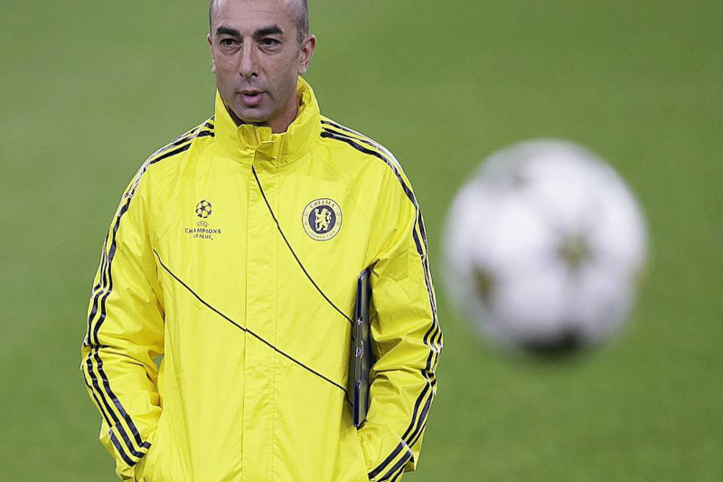
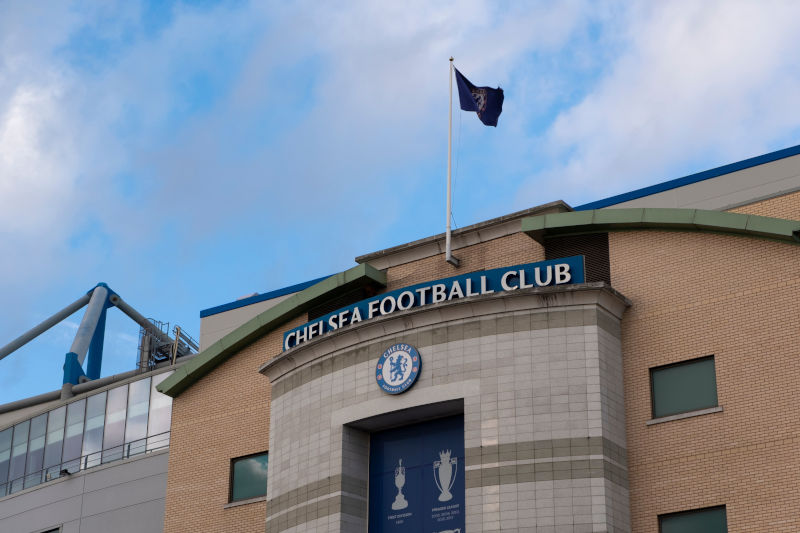
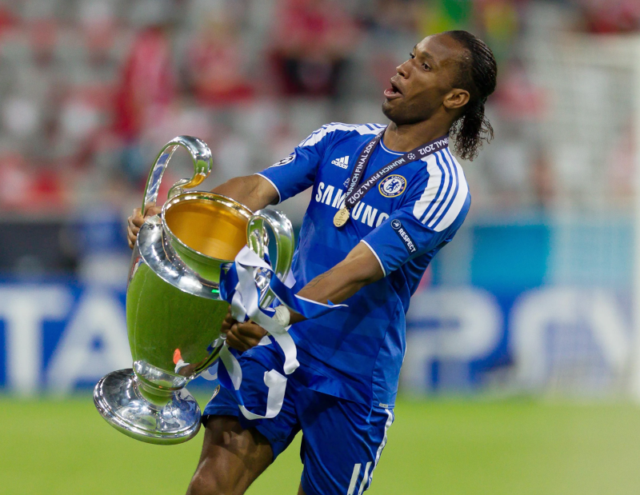

O Início Turbulento e a Troca de Comando
A campanha europeia começou com o técnico português André Villas-Boas no comando. No entanto, após uma derrota por 3 a 1 para o Napoli nas oitavas de final da competição e uma crise de resultados no Campeonato Inglês, a diretoria demitiu Villas-Boas em março de 2012.
O ex-jogador e assistente Roberto Di Matteo assumiu o cargo de técnico interino. Ele conseguiu unificar o vestiário liderado pela "velha guarda" jogadores experientes como Frank Lampard, John Terry, Didier Drogba e Petr Čech.

A Grande virada e o Milagre do Camp Nou
Na fase de oitavas de final, o Chelsea precisou reverter o 3 a 1 sofrido para o Napoli. Em Stamford Bridge, venceram por 4 a 1 na prorrogação, garantindo a classificação épica.
Nas quartas, passaram pelo Benfica sem grandes sustos, mas o teste supremo veio na semifinal contra o poderoso Barcelona de Lionel Messi e Pep Guardiola.
- No primeiro jogo em Londres, os Blues venceram por 1 a 0 (gol de Drogba).
- No Camp Nou, o Chelsea ficou com um jogador a menos após a expulsão de John Terry no primeiro tempo e viu o Barça abrir 2 a 0. Ainda antes do intervalo, Ramires marcou um golaço de cobertura. No segundo tempo, Čech e a trave seguraram a pressão catalã, e nos acréscimos, Fernando Torres arrancou livre para fechar o placar em 2 a 2 e colocar o Chelsea na final.

A Final em Munique
A decisão foi disputada no dia 19 de maio de 2012 na Allianz Arena, casa do adversário da final, o Bayern de Munique. O cenário era totalmente adverso: o Chelsea estava sem suspensos importantes (como o capitão Terry e o meio-campista Ramires) e viu o Bayern pressionar o jogo inteiro, abrindo o placar com Thomas Müller aos 38 minutos do segundo tempo.
Quando a taça parecia perdida, aos 43 minutos, Juan Mata cobrou escanteio na medida e Didier Drogba testou firme para o fundo das redes, empatando o jogo em 1 a 1 e levando a decisão para a prorrogação. No tempo extra, Čech defendeu um pênalti de Arjen Robben.
A Disputa de Pênaltis
A decisão foi para as penalidades máximas:
- Juan Mata desperdiçou a primeira cobrança do Chelsea, mas Čech defendeu os chutes de Olic e Schweinsteiger.
- Coube a Didier Drogba cobrar o último pênalti, deslocar o goleiro Manuel Neuer e consagrar os Blues como campeões da Europa pela primeira vez na história, coroando a era Roman Abramovich com o troféu mais desejado do continente.
